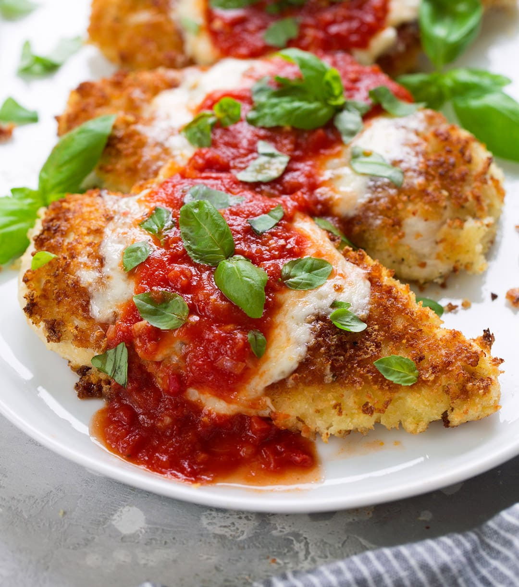

Home
Chicken Parmesan

Description
One of the easiest and most iconic Italian dish to make at home! This recipe includes breading and frying cutlets of tenderized chicken breast, before being drizzled with a savory tomato sauce and then smothered with a generous heap of melted mozzerella cheese, and served with a side of spaghetti marinara.
Ingredients:
For Chicken:
- 2 Large Eggs
- 1 tbsp minced garlic
- 2 tbsp fresh chooped parsley
- Salt and Pepper
- 3 large chicken breasts halved to make 6 fillets
- 1 cup Panko breadcrumbs
- 1/2 cup Italian breadcrumbs
- 1/2 cup fresh grated parmesan cheese
- 1/2 cup olive oil for frying
For the Sauce:
- 1 tbsp olive oil
- 1 large onion chopped
- 2 tsp minced garlic
- 14oz (400g) tomato puree
- Salt and Pepper to taste
- 1 tsp dried Italian herbs
- 1 tsp sugar (optional)
For the Topping:
- 8oz (250g) mozzarella cheese sliced or shredded.
- 1/3 cup fresh shredded parmesan cheese
- 2 tbsp fresh chopped basil or parsely
Steps
For Chicken:
- Preheat Oven to 430°F | 220°C. Lightly grease an oven tray (or baking dish) with non-stick cooking oil spray; set aside.
- Whisk together eggs, garlic, parsley, salt and pepper in a shallow dish. Add chicken into the egg, rotating to evenly coat each fillet in the mixture. Cover with plastic wrap and allow to marinate for at least 15 minutes (or overnight night if time allows for a deeper flavour).
- When chicken is ready for cooking, mix bread crumbs, Parmesan cheese and garlic powder together in a separate shallow bowl. Dip chicken into the breadcrumb mixture to evenly coat.
- Heat oil in a large skillet over medium-high heat until hot and shimmering. Fry chicken until golden and crispy, (about 4-5 minutes each side).
- Place chicken on prepared baking tray / dish and top each breast with about 1/3 cup of sauce (sauce recipe below). Top each chicken breast with 2-3 slices of mozzarella cheese and about 2 tablespoons parmesan cheese. Sprinkle with basil or parsley.
- Bake for 15-20 minutes, or until cheese is bubbling and melted, and the chicken is completely cooked through.
For Sauce:
- Heat oil in a medium-sized pot. Fry onion until transparent (about 3 minutes), then add the garlic until fragrant (about 30 seconds).
- Add the tomato puree, salt and pepper to taste, Italian herbs and sugar (If using). Cover with lid to simmer for about 8 minutes, or until sauce has thickened slightly. Taste test and adjust salt and pepper, if needed.